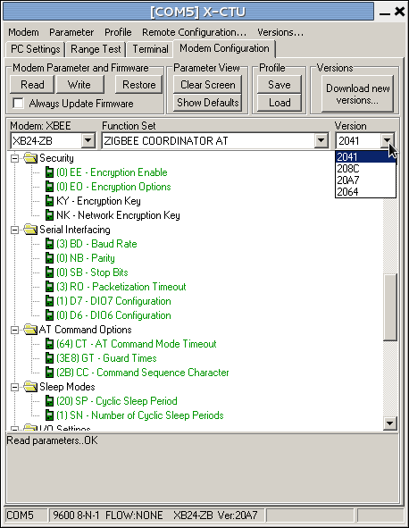
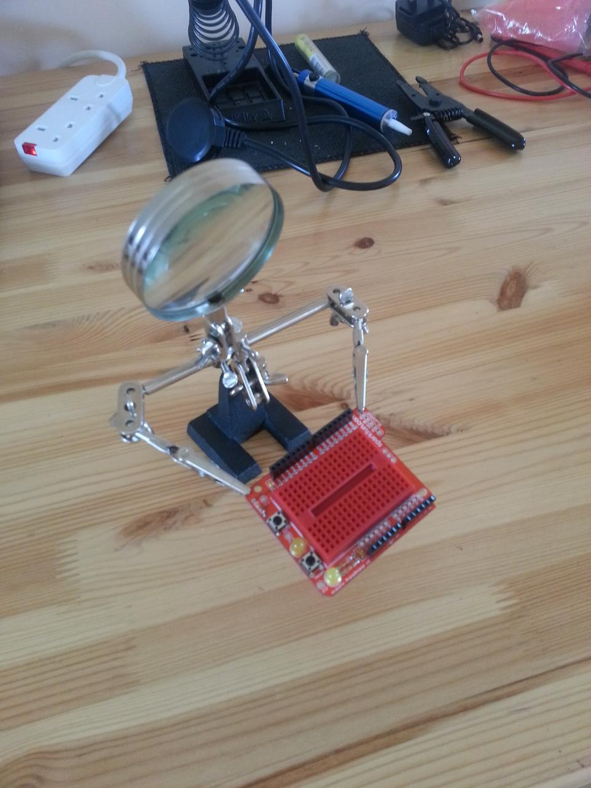

Posts about arduino (old posts, page 1)
API communications now working
A small sensor network now working, with two edge devices talking to a base station.

This step of the project accomplishes two things: is gets API networking mode working for the XBee radios, and makes sure the the interaction between software on the Arduinos and software running on the base station work too.
The data stream is simple enough: each Arduino counts up from 0 to 255 every 5s, passing the result up to the co-ordinator radio. A Processing program on the laptop collects the numbers and prints them. Naturally they become somewhat intertwined as their clocks aren't quite synchronised.
Actually this is enough to perform a simple radio survey to check transmission distance: we can move the radios away from the base station until they lose contact (nominally 100m for these 2mW radios, in reality probably substantially less), then move back into range, and then move one of the radios again to check that it meshes with the intermediate node in reaching back to the base station. This will also check that battery power works.

The software is quite straightforward, and the xbee-arduino library handles all the low-level communications -- although it's very low-level, fine for the experienced programmer but probably all but mystifying to anyone not used to this kind of software. The corresponding Java xbee-api library is slightly more friendly, but only slightly: they probably both need wrapping into a framework that hides the radio nastiness.
I think the biggest hurdle for this sort of system is the data format -- or, more precisely, the need (or desire, at least) to to use C at one end and Processing/Java at the other, which means that the data on the wire is being described twice. A framework approach could use (for example) JSON, although there'd still be a need to make sure it was compactly encoded and transmitted.
The xbee-arduino library
A library for using XBee radios with Arduinos.
The XBee radio operates in two modes: transparent or text-based, and API or binary-based. The latter (API mode) is generally considered more suitable for computer-to-computer interactions, as it's faster and simpler for computers to manipulate. However, using an XBee in this mode requires additional software.
The xbee-arduino library provides Arduino functions to access the API mode functionality of the various XBee radio modules. The library is quite low-level, but does provide access to all the necessary functions like issuing AT commands to control the modem and sensing and receiving packets of data to other radios in the mesh network.
To use the library you download the latest version from the web page and unpack it into the libraries/ directory of your Arduino IDE. You also need to make sure that the radios you use have the API function set installed using X-CTU, as the library only makes sense for radios in API mode. You also have to set the "AP" parameter to 2 when writing the firmware.
XBee firmware management with X-CTU
Managing Digi's XBee radio modules requires using their X-CTU package to upload the correct firmware. In this post we explain how.
This post is slightly depressing: not because it's on an unhappy topic, but because the effort and software needed to manage XBee radios is so complex to set up. In many ways this is just a function of the good design of the XBee: it's so minimal in terms of footprint and power consumption at run-time that it offloads a lot of work to external tools (and the user) at system build-time. But it's still a lot of work to get such a small piece of kit running.
X-CTU is intended to upload firmware to XBee radio modules. This is needed to change the firmware between router and co-ordinator of the Zigbee mesh network, and between the different protocol variants that the XBee radios can support.

One limitation of X-CTU is that it only works on Windows: if you're running Linux, X-CTU will run under Wine. You can download the latest X-CTU from Digi's X-CTU page; alternatively, there's a version installed on the Citizen Sensing VM.
To use X-CTU you need to connect your XBee module to your computer. The easiest way to do this is using an XBee USB breakout board, which provides an XBee socket and a USB socket. Insert the radio into the board, plug in a USB cable, and plug the other end into a USB socket. The light on the breakout board will then come on (see photograph above).

You next need to start up X-CTU and tell it where the XBee is. It hangs off a Windows COM port, and X-CTU will typically find it automatically. You should then be able to press the "Test/Query" button, and X-CTU will interrogate the XBee and display a small window showing some information about it, as shown in the screenshot on the right: the details don't matter, but this shows that the XBee is talking to the computer properly.

Assuming everything is now working correctly, the next step is to decide what firmware to download to the radio. Click on the "Modem configuration" tab, and then click the "Read" button: this reads the firmware that's on the XBee at the moment, and puts the details into the window. Typically this results in a display like that shown on the left. The important things to notice are the two drop-down boxes labelled "Function Set" and "Version". The function set is the description of the firmware, in which case indicating that the XBee is running Zigbee router firmware that responds to AT commands (more on this below).

To download a new firmware, we then select the function set and version we want to use. Suppose we want to make this XBee into the mesh co-ordinator. We change the function set to "Zigbee Coordinator AT" (keeping with Zigbee and the AT command set) in "Function set" the drop-down, then select the most recent version of this function set from the "Version" drop-down. (Versions are identified by hex numbers: the most recent in the screenshot right is "20A7", that being the highest hex number. Unfortunately X-CTU orders the numbers alphabetically, not in hex-numeric order.) Pressing "Write" will update the radio's firmware, and the radio is then ready for use as a co-ordinator.
If you look through the list of function sets, there will be quite a few options, including protocols other than Zigbee. These probably aren't worth too much exploration, but you'll also notice that there are Zigbee AT and API function sets corresponding to the two modes (transparent and API) that the XBee can support. Be sure to select the correct one for your application.
That's it: the radio is now ready for use.
Advanced use: setting optional parameters
There's one more thing that X-CTU can be used for: it can set parameters to the firmware function set, and this is sometimes important when using the radios.
When you've read the firmware from a radio, the main part of the X-CTU window contains a hierarchy of folders and cryptic values, for example "(4) PL - Power level". These are parameters that can be changed to modify the detailed behaviour of the radio. Some can also be set using AT commands. The example we used sets the radio's power level to 4. If you click on this, it will show a drop-down box giving other options. You might, for some applications, choose to reduce the radio power to 1 ("low") to save batteries. If you choose this and then write the firmware to the radio, the module will use this power setting.
In the example shown on the left, we're changing the AP parameter ("API enable") to 2, which is needed for the xbee-arduino library to work properly. If we now write the firmware (with the Zigbee co-ordinator API function set selected as shown), the radio will be ready for use.
First bit of soldering done
The first proto-shield has been assembled.
The SparkFun prototype shield for the Arduino essentially lets you put a small custom circuit onto an Arduino shield.

The "bare" version has a small area for soldering-up in the middle of the shield. I decided to make a slightly more re-usable version with a small breadboard so I could experiment with the electronics without soldering. The assembly is very easy, although the board is of course very cramped. The "helping hands" were invaluable.
Several lessons learned: I need a finer bit for my soldering iron, a smaller pair of side-cutters for trimming the wires, and my soldering skills are truly appallingly rusty. The shield has a couple of places where it can take additional headers (for controlling the LEDs and using the spare button that's not being used for reset, and to bring the ICSP connectors through) which it would be useful to have.
Adventures at either end of the performance spectrum
Over the past week I've been playing with some very small machines intended as sensor network nodes. Paradoxically this has involved deploying a ridiculous amount of computing power.
Most of my work on sensor networks is at the level of data and sensors, not hardware. I was feeling the need to get my hands dirty, so I bought an Arduino, an open-source prototyping platform that's actually somewhat less capable than many of the nodes we work with. They're basically a hobbyist platform and are often looked down upon by professionals as being toys.
I think these criticisms are unfair. Firstly, Arduinos massively simplify software development by abstracting-away from a lot of the complexities that simply aren't needed in many applications. Secondly, unlike a lot of sensor network hardware, they're mainstream and will benefit from competition, economies of scale and the like in a way that more specialised kit probably never will. Thirdly, as the centres of an ecosystem of other boards they can focus on doing one function -- co-ordination -- and let the daughter boards focus on their their own functions, rather than tying everything together.
In some ways this makes hardware more like software, and more amenable to software-like rapid development cycles. It means that each component can move up its own learning curve independently of the others, and not hold everything back to the speed of the slowest (and often hardest-to-improve) component. That has been the unfortunate outcome several times in the past: I'm reminded strongly of the demise of the Transputer, that lost its early lead by trying to be too integrated. (That's an interesting story for another time.)
One good example of Arduino re-use is that it can interface to Zigbee radios, specifically to Digi's range of XBee modules. Zigbee is the latest-and-greatest short-range wireless protocol, and Arduino kit can interface directly to it rather than relying on an integrated radio sub-system. They mesh together and do all sorts of other fun stuff that's great for sensor systems, and I'm looking forward to understanding them better,
However getting XBee radios to work often involves re-flashing their firmware to make sure they take on the appropriate role in the mesh network. The tool that Digi provide to do this (unhelpfully called X-CTU) only runs on Windows. As might not be a complete surprise, I don't have any Windows machines.
I doubt I'm unusual in this: if you're the sort of person who's likely to play around with hobbyist hardware, there's a reasonable chance that you run Linux and/or Mac OS X as your main or only operating systems. So building kit for the hobby hardware market that relies on Windows-only tools is short-sighted. And unnecessary: there are plenty of cross-platform user interface tools available for C, or they could just write it in Java.
By a strange quirk I also don't have an Intel-based Linux machine at the moment, so I was left in something of a quandary as to how to run the necessary firmware tools. Solving it takes us to the other end of the performance spectrum. The solution was to run X-CTU under the Wine emulator for Linux, with the Linux in question being a Debian installation running virtualised under VirtualBox on my Macbook Air. To put it another way, I created a virtual stand-alone PC on my Mac, within which I installed Linux, which therefore thought it was running on its own separate machine, within which I installed a Windows emulation layer and ran X-CTU -- all to change the firmware on a radio with significantly less computational power than a central heating thermostat.
It's things like this that make one realise how ludicrously, insanely overpowered modern computers are.
The Mac can run three-layer emulations like this without any problem at all, and can still do a load of other stuff simultaneously. And it's a laptop, and not one noted for being massively powerful by modern standards. It seems rather perverse to need to deploy this kind of power to work with such tiny machines. I think there are several lessons. Computing power really is really, really cheap -- so cheap that it's not worth worrying about it, and we haven't come close to hitting a plateau in practical terms yet. But this just highlights that programming sensor networks requires a completely different discipline and skill-set, which may not be common in programmers of more recent vintage. If this gap is going to remain -- and I think it is -- it's something we need to consider in the ways we teach computer science.